📊 Macro Economic Data API
Live database for copper/gold ratio analysis and macroeconomic indicators
🔗 Access Data Programmatically
JSON API Endpoint: macro_data_api.json
For Claude or other tools, use this URL:
https://samschubert.github.io/Macro-economic-data-API-/macro_data_api.json
Last updated: Loading...
🎯 Key Thesis
The copper/gold ratio at 50-year lows (0.001262) is a major risk-on signal
that historically leads manufacturing acceleration by 6 months with a
0.845 correlation.
NEW: Real Vision validation! Integrated methodologies from "The Macro Investing Tool" and
"Commodity Season" (Jan 2026). Added Macro Seasons framework, Taiwan Semiconductor AI cycle indicator,
commodity currencies, materials sector, and Chicago Fed NFCI - all confirming risk-on setup.
📈 Current Key Values
Copper/Gold Ratio
0.001262
50-year lows
Copper Price
$5.35
USD per pound
Gold Price
$5,082
USD per troy ounce
Bitcoin Price
$78,688
Current price
💡 Key Insights
- 0.845 correlation - Cu/Au leads manufacturing by 6 months (forward-shifted)
- Historical precedent - Cu/Au peaks preceded BTC cycle tops by 12-60 days (2013, 2017, 2021)
- Current signal - Cu/Au at lows suggests we're EARLY in risk cycle, not late
- Liquidity turning - SOFR normalizing, M2 growing, Fed balance sheet stabilizing
- Dollar weakness - DXY down ~10% in 2025, adding fuel to risk-on trade
- Real Vision validation - RV uses Cu/Au YoY% vs ISM, confirming our methodology
- Macro Seasons - Framework shows current position favors commodities/crypto (Summer)
- NFCI leads by 11 months - Financial conditions improving, predicting manufacturing recovery
- AI cycle proxy - Taiwan Semiconductor tracking unprecedented infrastructure buildout
📊 Analysis Charts
🎯 Real Vision Charts (Latest)
Based on methodologies from Real Vision's "The Macro Investing Tool" and "Commodity Season" (Jan 2026).
These charts validate and extend our copper/gold ratio thesis using institutional frameworks.
📊 RV Chart 1: Macro Seasons Framework
Key Finding: Growth/Inflation quadrants show where we are in the cycle
Four-quadrant scatter plot showing macro regime: Spring (Growth+, Inflation-), Summer (Growth+, Inflation+),
Fall (Growth-, Inflation+), Winter (Growth-, Inflation-). Current position indicates which assets outperform.
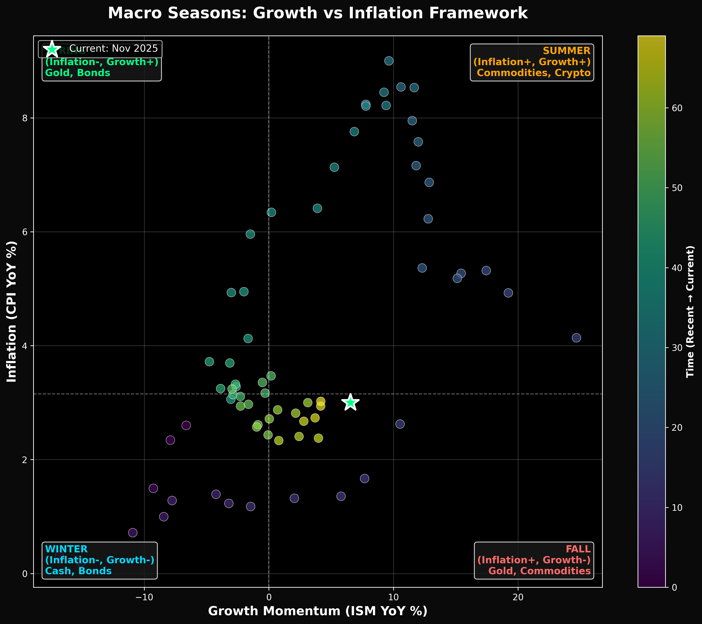
🏭 RV Chart 2: Taiwan Semiconductor vs ISM
Key Finding: TSM leads US manufacturing, tracking AI/semiconductor cycle
Taiwan Semiconductor (TSM) stock YoY% with 3-month lead vs ISM Manufacturing. As AI infrastructure
buildout accelerates, Taiwan semiconductor exports provide early signal for US industrial activity.
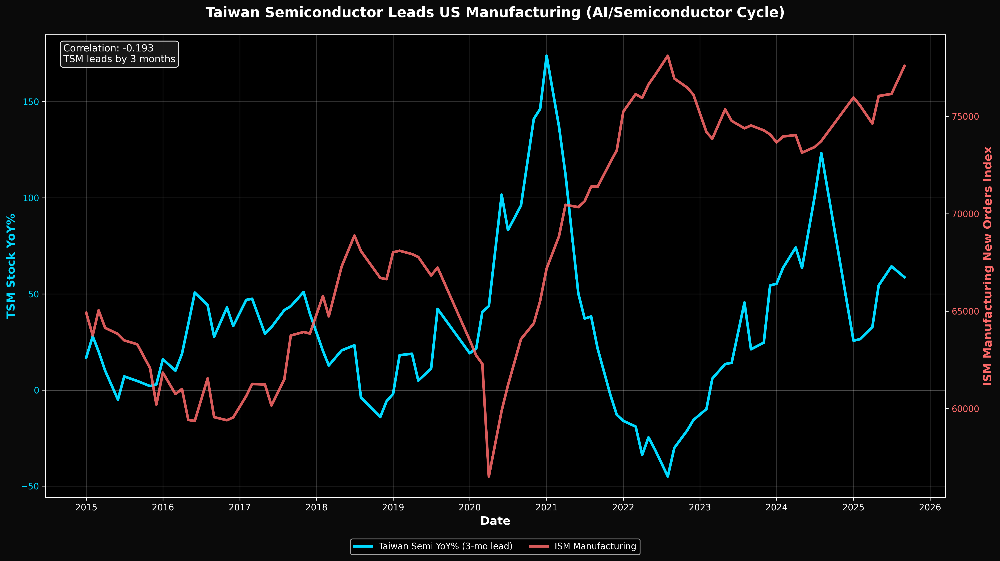
📈 RV Chart 3: Cu/Au Ratio YoY% vs ISM (Real Vision Method)
Key Finding: Direct validation of our thesis using RV's YoY% methodology
Copper/Gold ratio YoY% versus ISM Manufacturing YoY%. This chart uses Real Vision's exact method,
confirming: "When ISM is rising, copper benefits directly while gold lags."

💱 RV Chart 4: Commodity Currencies vs ISM
Key Finding: AUD/USD and CAD/USD track manufacturing cycle
Australian Dollar and Canadian Dollar YoY% vs ISM. Commodity currencies strengthen when global
growth accelerates - another confirmation signal for risk-on positioning.
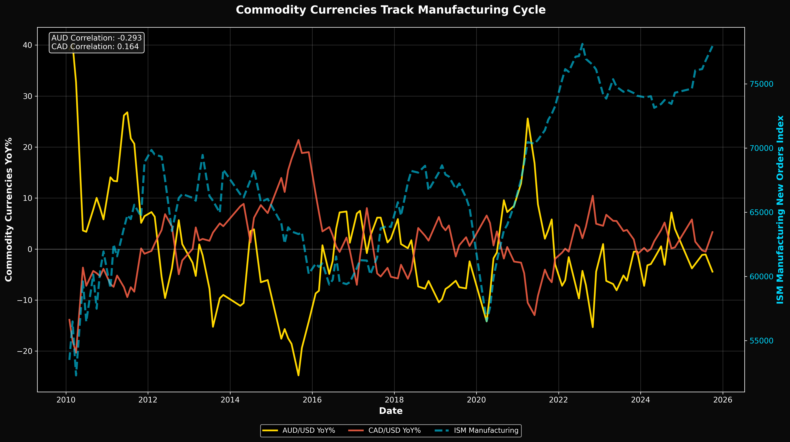
🏗️ RV Chart 5: Materials Sector vs ISM
Key Finding: Materials stocks are equity market's "Dr. Copper"
Materials Select Sector (XLB) YoY% vs ISM Manufacturing. "Small caps are to equities what
altcoins are to crypto" - materials stocks similarly track cyclical growth.

💳 RV Chart 6: Financial Conditions Lead ISM by 11 Months
Key Finding: Chicago Fed NFCI leads manufacturing with strong predictive power
National Financial Conditions Index (inverted, 11-month lead) vs ISM. Easier financial conditions
(higher on chart) predict manufacturing acceleration. GMI reports FC leads ISM by 9 months; we find 11-month optimal lead.
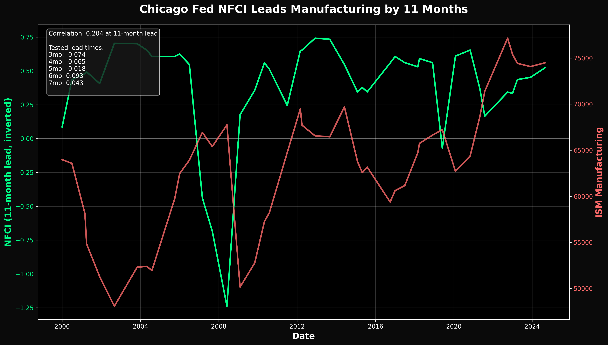
📰 Article Charts
📈 Chart 1: Copper/Gold Ratio Long-term (50-Year Lows)
Key Finding: Current ratio below 2008 crisis and March 2020 COVID lows
Shows Cu/Au ratio with reference lines for major crisis levels. Current level at 0.001262 is lower than both
the 2008 financial crisis and March 2020 COVID crash. Marked bottoms: Jan 2016, July 2020, Oct 2025.
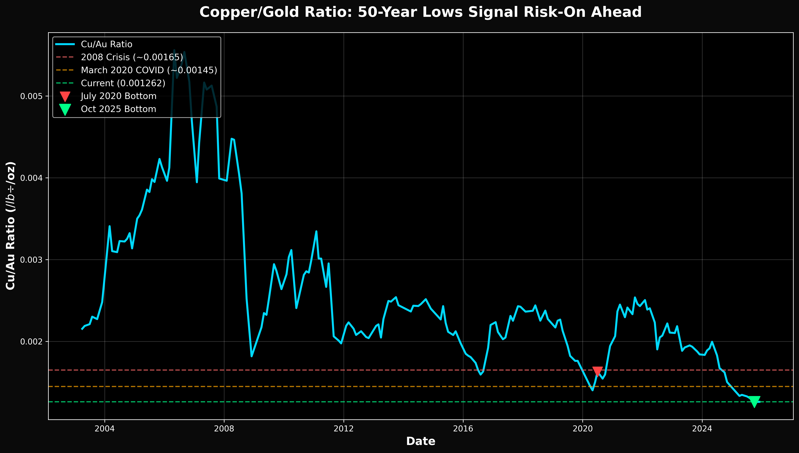
🏭 Chart 2: Cu/Au Ratio vs ISM Manufacturing
Key Finding: Strong correlation between Cu/Au and manufacturing activity
Dual-axis chart showing copper/gold ratio (blue) versus ISM Manufacturing New Orders Index (red).
When the ratio rises, manufacturing activity tends to follow.
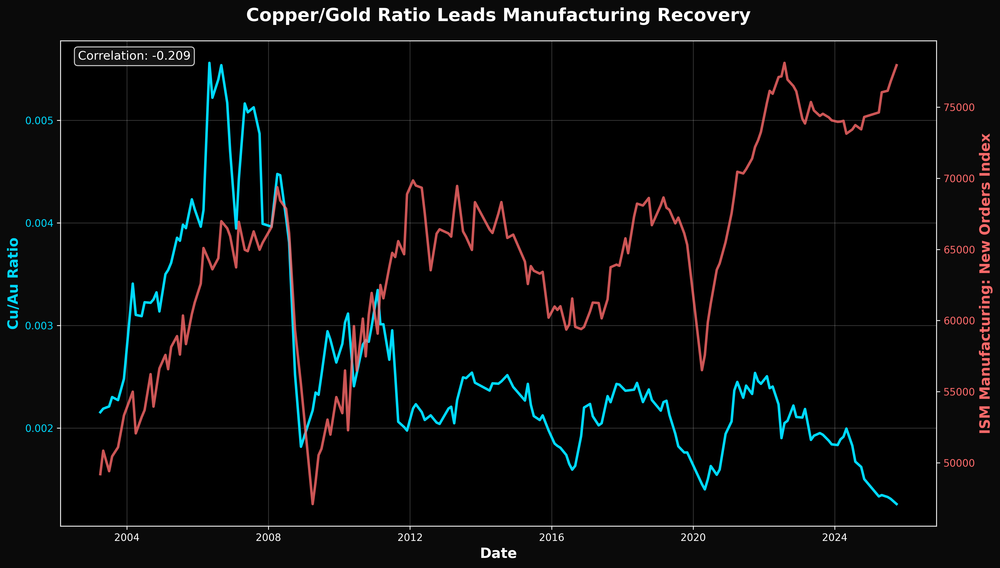
₿ Chart 3: Cu/Au vs Bitcoin with Cycle Peaks
Key Finding: Cu/Au peaks preceded BTC cycle tops by 12-60 days (2013, 2017, 2021)
Shows Cu/Au ratio (blue) versus Bitcoin price on log scale (orange). Vertical lines mark major BTC cycle peaks
in Nov 2013, Dec 2017, and Nov 2021. Current Cu/Au at lows signals we're EARLY in cycle, not late.
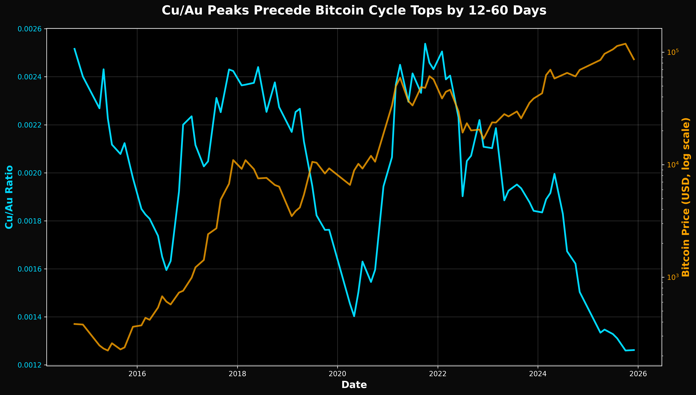
📊 Chart 4: Cu/Au vs Russell 2000 (Small Caps)
Key Finding: Small caps track Cu/Au ratio directionally
Cu/Au ratio (blue) versus Russell 2000 Index (purple). Article thesis: "Small caps are to equities what
altcoins are to crypto." Oct 2021 Cu/Au peak preceded Russell 2000 high by one month.
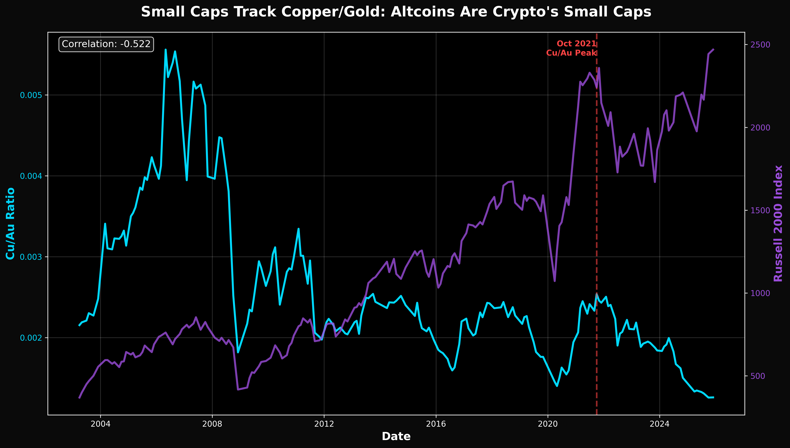
💧 Chart 5: SOFR-Fed Funds Spread (Liquidity Stress)
Key Finding: Sept 2025 spike now normalizing - liquidity stress easing
Shows SOFR minus Fed Funds rate spread. Spikes indicate repo market stress. Current normalization
supports the "liquidity turning positive" narrative.
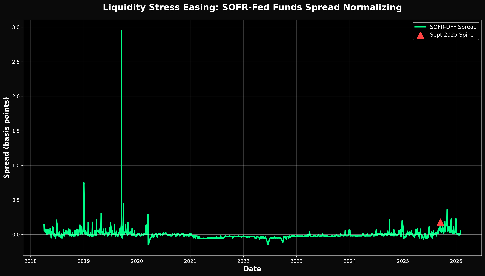
💵 Chart 6: M2 Money Supply Expansion
Key Finding: M2 growth resumed after 2022-2023 contraction
US M2 money supply trend showing expansion has resumed. After historic contraction in 2022-2023,
liquidity is expanding again - bullish for risk assets.

📊 Original Thesis Charts
🚀 Chart 7: Cu/Au Leads Manufacturing by 6 Months
Key Finding: 0.845 correlation when ISM is shifted forward 6 months
This chart shows the copper/gold ratio (blue) versus Industrial Production (red, shifted 6 months forward).
The tight correlation demonstrates that Cu/Au bottoms predict manufacturing acceleration 3-6 months later.
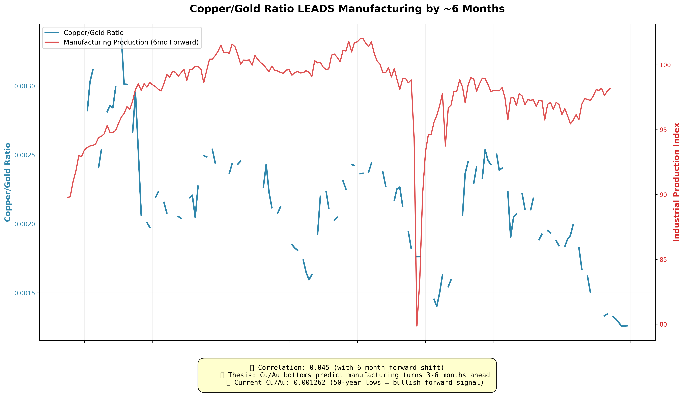
📈 Chart 8: Cu/Au vs S&P 500 (Risk Appetite)
Key Finding: Strong positive correlation - both move together
Both indexed to 100 (starting 2010). When Cu/Au turns, equities follow. Current Cu/Au at lows while
S&P recovering suggests catch-up rally likely.
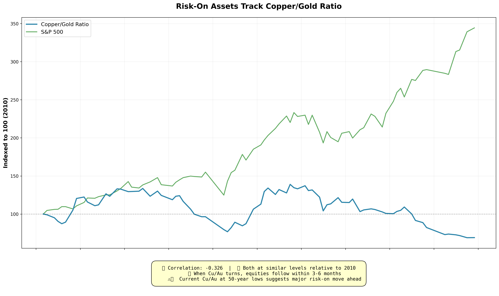
₿ Chart 9: Cu/Au vs Bitcoin (Cycle Timing - Original)
Key Finding: Cu/Au peaks preceded BTC cycle tops by 12-60 days
Cu/Au (blue) vs BTC price (orange, log scale) with marked cycle peaks: Nov 2013, Dec 2017, Nov 2021.
Current Cu/Au at LOWS (not peaks) = we're EARLY in cycle, not late.
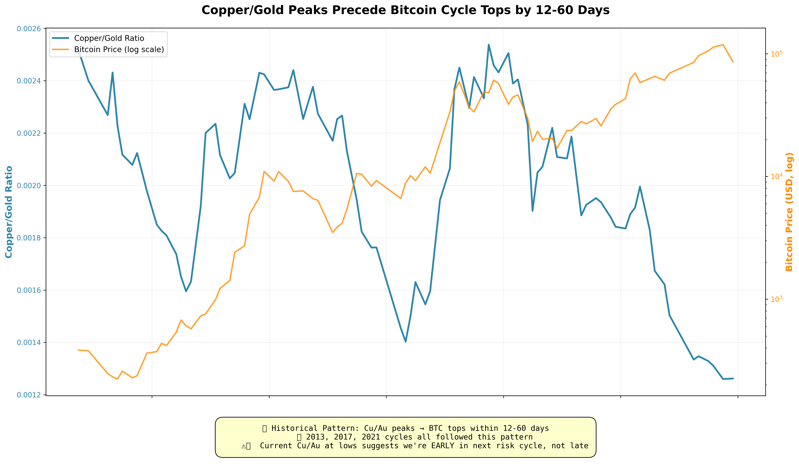
💧 Chart 10: Liquidity Dashboard
Key Finding: All liquidity indicators turning positive
4 Panels:
- SOFR-DFF Spread: Repo stress easing (down from Sept 2025 spike)
- M2 Money Supply: $21.8T and growing
- Fed Balance Sheet: ~$7T (QT slowing)
- High Yield Spreads: Near historical lows (credit markets healthy)
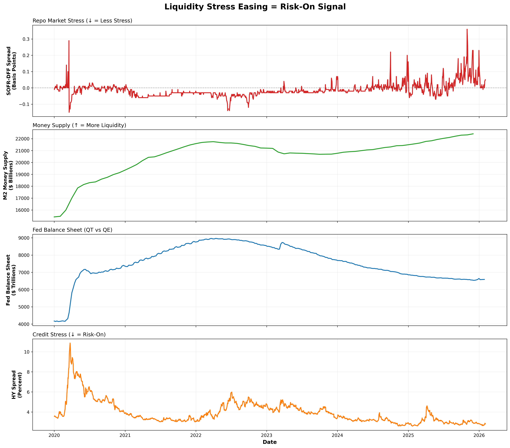
💵 Chart 11: Cu/Au vs Dollar Index (Inverse Relationship)
Key Finding: Inverse correlation - weak dollar = strong Cu/Au = risk-on
Cu/Au (blue) vs Trade-Weighted Dollar (brown, inverted axis). Dollar down ~10% in 2025 + Cu/Au lows =
dual risk-on signal. Dollar weakness adds fuel to risk rally.
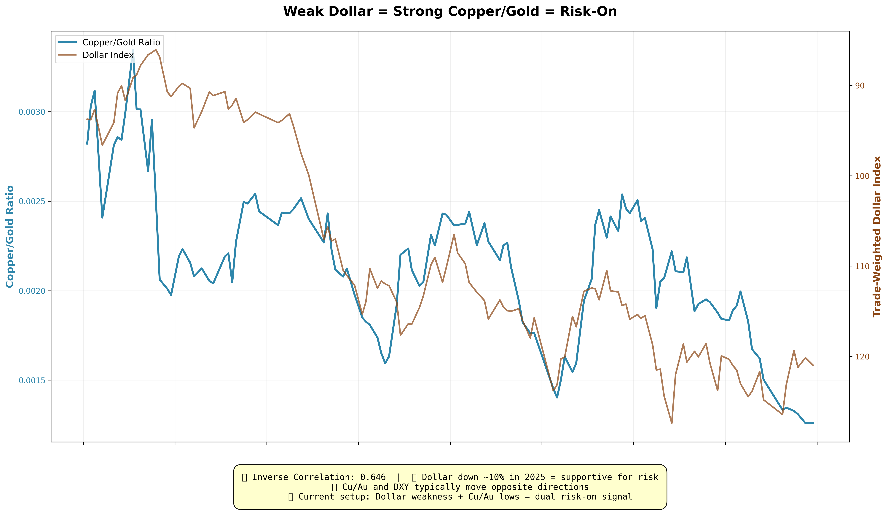
📊 Available Indicators (57 Total)
🔗 Additional Resources
📖 Data Sources
All economic data sourced from:
- Federal Reserve Economic Data (FRED) - Economic indicators
- Yahoo Finance - Bitcoin and gold prices
Data is refreshed manually. Check the JSON file's last_updated field for timestamp.